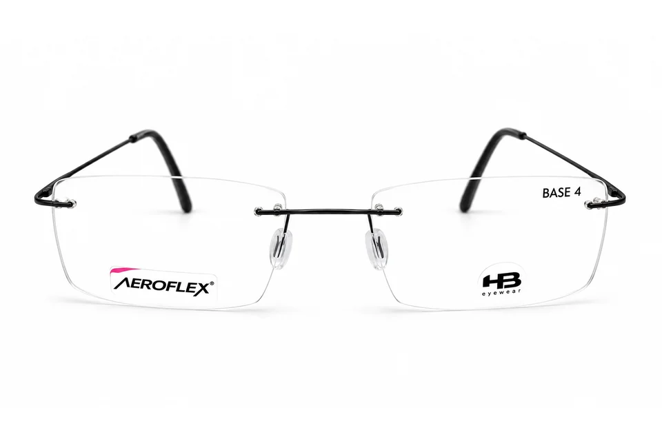

O que devo levar para escolher meus óculos de grau?
Traga sua receita médica e, se já usa óculos, leve o par atual.

Explore os ângulos. Você também pode usar ← e → nos botões.
ARMAÇÃO DE GRAU
Armação sem aro com hastes pretas finas e plaquetas.
Quero conhecer de pertoTamanho, preço e disponibilidade sob consulta à loja.
Voltar para óculos de grauEXPERIÊNCIAS DE CLIENTES
O que os clientes contam sobre o atendimento na Pupila.
VAMOS ENCONTRAR O SEU PRÓXIMO OLHAR?
De perto, cada detalhe faz a diferença. Venha para a Pupila.